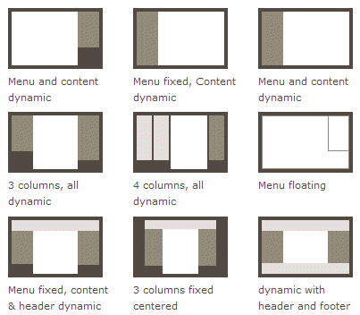
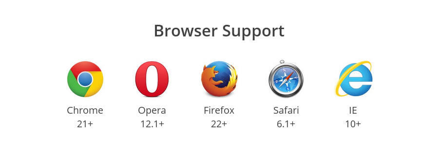
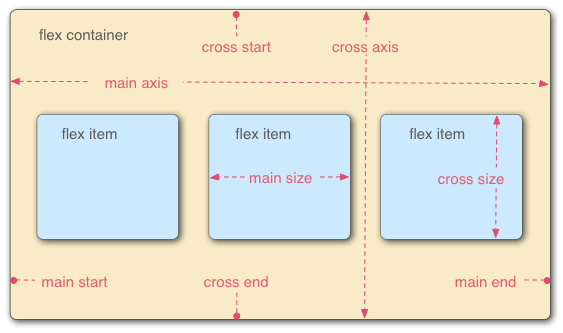
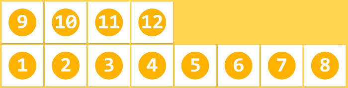
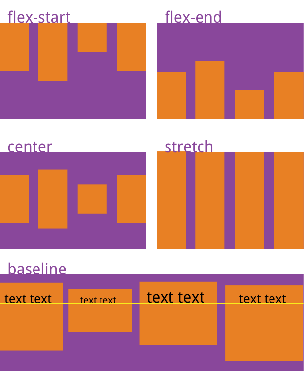
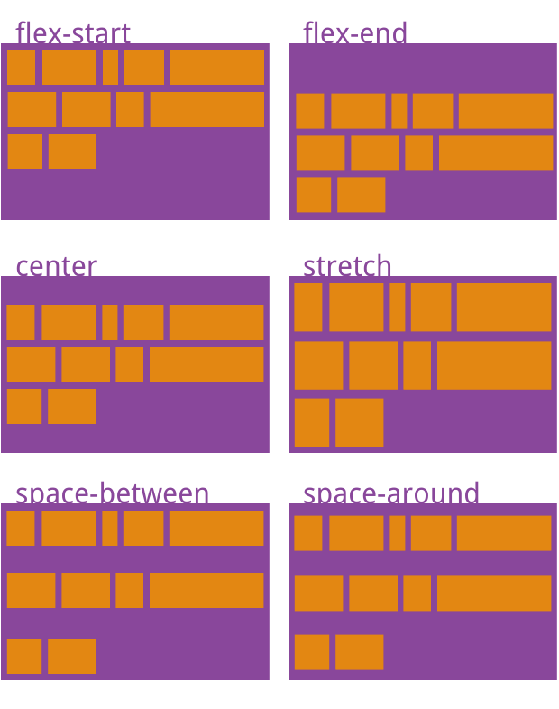
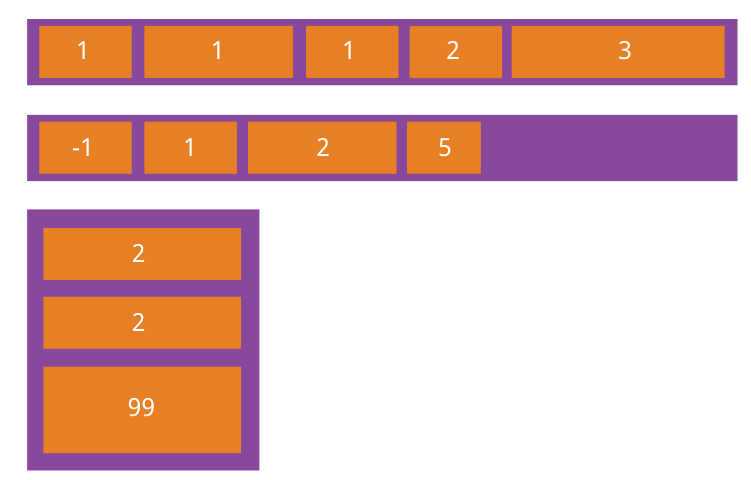
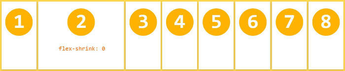

ウェブページのレイアウト（layout）はCSSの重要な応用の一つです。

レイアウトの伝統的な解決策は、基づいていますボックスモデルに依存しdisplayプロパティ +positionプロパティ +floatプロパティ。これは特殊なレイアウトには非常に不便です。例えば、垂直中央揃えは実装が容易ではありません。

2009年、W3Cは新しい方案—-Flexレイアウトを提案しました。これは簡便で、完全で、レスポンシブにさまざまなページレイアウトを実現できます。現在、すべてのブラウザでサポートされており、これは今すぐ安全にこの機能を使用できることを意味します。

Flexレイアウトは将来のレイアウトの最有力候補となるでしょう。本記事ではFlexレイアウトの構文を紹介します。
以下の内容は主に次の2つの記事を参考にしています：A Complete Guide to FlexboxとA Visual Guide to CSS3 Flexbox Properties。
一、Flexレイアウトとは？
FlexはFlexible Boxの略で、「弾性レイアウト」を意味し、ボックスモデルに最大の柔軟性を提供します。
どのコンテナでもFlexレイアウトに指定できます。
.box{
display: flex;
}
インライン要素でもFlexレイアウトを使用できます。
.box{
display: inline-flex;
}
Webkitカーネルのブラウザでは、-webkitプレフィックスを付ける必要があります。
.box{
display: -webkit-flex; /* Safari */
display: flex;
}
注意：Flexレイアウトに設定すると、子要素のfloat、clear、vertical-alignプロパティは無効になります。
二、基本概念
Flexレイアウトを採用した要素はFlexコンテナ（flex container）と呼ばれ、略して「コンテナ」といいます。そのすべての子要素は自動的にコンテナのメンバーとなり、Flex項目（flex item）と呼ばれ、略して「項目」といいます。

コンテナにはデフォルトで2つの軸があります：水平の主軸（main axis）と垂直の交差軸（cross axis）です。主軸の開始位置（フレームとの交差点）はmain startと呼ばれ、終了位置はmain endと呼ばれます。交差軸の開始位置はcross startと呼ばれ、終了位置はcross endと呼ばれます。
項目はデフォルトで主軸に沿って配置されます。単一の項目が占める主軸のスペースはmain sizeと呼ばれ、占める交差軸のスペースはcross sizeと呼ばれます。
三、コンテナのプロパティ
以下の6つのプロパティはコンテナに設定します。
- flex-direction
- flex-wrap
- flex-flow
- justify-content
- align-items
- align-content
3.1 flex-directionプロパティ
flex-directionプロパティは主軸の方向（つまり項目の配置方向）を決定します。
.box {
flex-direction: row | row-reverse | column | column-reverse;
}

このプロパティには4つの値があります。
- row（デフォルト値）：主軸は水平方向で、起点は左端です。
- row-reverse：主軸は水平方向で、起点は右端です。
- column：主軸は垂直方向で、起点は上端です。
- column-reverse：主軸は垂直方向で、起点は下端です。
3.2 flex-wrapプロパティ
デフォルトでは、項目は1本の線（「軸線」とも呼ばれます）上に配置されます。flex-wrapプロパティは、1つの軸線に収まらない場合の折り返し方法を定義します。

.box{
flex-wrap: nowrap | wrap | wrap-reverse;
}
このプロパティには3つの値を指定できます。
（1）nowrap（デフォルト）：折り返しません。

（2）wrap：折り返し、最初の行は上にあります。

（3）wrap-reverse：折り返し、最初の行は下にあります。

3.3 flex-flow
flex-flowプロパティはflex-directionプロパティとflex-wrapプロパティの省略形で、デフォルト値はrow nowrapです。
.box {
flex-flow: <flex-direction> <flex-wrap>;
}
3.4 justify-contentプロパティ
justify-contentプロパティは、主軸上での項目の配置方法を定義します。
.box {
justify-content: flex-start | flex-end | center | space-between | space-around;
}

このプロパティには5つの値を指定できます。具体的な配置方法は軸の方向に関係します。以下では主軸が左から右であると仮定します。
- flex-start（デフォルト値）：左揃え
- flex-end：右揃え
- center：中央揃え
- space-between：両端揃え、項目間の間隔はすべて等しくなります。
- space-around：各項目の両側の間隔が等しくなります。そのため、項目間の間隔は項目とフレームの間隔の2倍になります。
3.5 align-itemsプロパティ
align-itemsプロパティは、交差軸上で項目がどのように配置されるかを定義します。
.box {
align-items: flex-start | flex-end | center | baseline | stretch;
}

このプロパティには5つの値を指定できます。具体的な配置方法は交差軸の方向に関係します。以下では交差軸が上から下であると仮定します。
- flex-start：交差軸の起点に揃えます。
- flex-end：交差軸の終点に揃えます。
- center：交差軸の中点に揃えます。
- baseline：項目の最初の行の文字のベースラインに揃えます。
- stretch（デフォルト値）：項目の高さが設定されていない場合やautoに設定されている場合、コンテナ全体の高さを占めます。
3.6 align-contentプロパティ
align-contentプロパティは、複数の軸線の配置方法を定義します。項目に軸線が1本しかない場合、このプロパティは機能しません。
.box {
align-content: flex-start | flex-end | center | space-between | space-around | stretch;
}

このプロパティには6つの値を指定できます。
- flex-start：交差軸の起点に揃えます。
- flex-end：交差軸の終点に揃えます。
- center：交差軸の中点に揃えます。
- space-between：交差軸の両端に揃え、軸線間の間隔は均等に分布します。
- space-around：各軸線の両側の間隔が等しくなります。そのため、軸線間の間隔は軸線とフレームの間隔の2倍になります。
- stretch（デフォルト値）：軸線が交差軸全体を占めます。
四、アイテムのプロパティ
以下の6つのプロパティは項目に設定します。
- order
- flex-grow
- flex-shrink
- flex-basis
- flex
- align-self
4.1 orderプロパティ
orderプロパティは項目の並び順を定義します。数値が小さいほど前に配置され、デフォルトは0です。
.item {
order: <integer>;
}

4.2 flex-growプロパティ
flex-growプロパティは項目の拡大比率を定義します。デフォルトは0で、つまり余白が存在しても拡大されません。
.item {
flex-grow: <number>; /* default 0 */
}

すべての項目のflex-growプロパティが1の場合、それらは余白（もしあれば）を均等に分割します。ある項目のflex-growプロパティが2で、他の項目がすべて1の場合、前者が占める余白は他の項目の2倍になります。
4.3 flex-shrinkプロパティ
flex-shrinkプロパティは項目の縮小比率を定義します。デフォルトは1で、つまりスペースが不足すると、その項目は縮小されます。
.item {
flex-shrink: <number>; /* default 1 */
}

すべての項目のflex-shrinkプロパティが1の場合、スペースが不足すると、すべて等しい比率で縮小します。ある項目のflex-shrinkプロパティが0で、他の項目がすべて1の場合、スペースが不足しても前者は縮小しません。
負の値はこのプロパティには無効です。
4.4 flex-basisプロパティ
flex-basisプロパティは、余分なスペースを分配する前に項目が占める主軸スペース（main size）を定義します。ブラウザはこのプロパティに基づいて、主軸に余分なスペースがあるかどうかを計算します。デフォルト値はautoで、つまり項目の本来のサイズです。
.item {
flex-basis: <length> | auto; /* default auto */
}
これはwidthプロパティやheightプロパティと同じ値（例：350px）に設定でき、その場合項目は固定スペースを占めます。
4.5 flexプロパティ
flexプロパティはflex-grow、flex-shrink、flex-basisの省略形で、デフォルト値は0 1 autoです。後の2つのプロパティは省略可能です。
.item {
flex: none | [ <'flex-grow'> <'flex-shrink'>? || <'flex-basis'> ]
}
このプロパティには2つのショートカット値があります：auto (1 1 auto) と none (0 0 auto) です。
3つの分離したプロパティを個別に書くのではなく、このプロパティを優先して使用することをお勧めします。ブラウザが関連する値を推定するためです。
4.6 align-selfプロパティ
align-selfプロパティは、単一の項目が他の項目とは異なる配置方法を持つことを許可し、align-itemsプロパティを上書きできます。デフォルト値はautoで、親要素のalign-itemsプロパティを継承することを意味し、親要素がない場合はstretchと同じになります。
.item {
align-self: auto | flex-start | flex-end | center | baseline | stretch;
}

このプロパティには6つの値を指定できます。auto以外はすべてalign-itemsプロパティと完全に一致します。
出典：http://www.ruanyifeng.com/blog/2015/07/flex-grammar.html